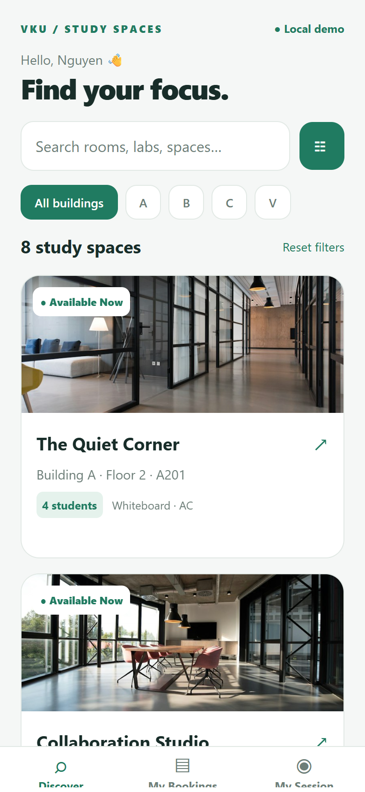
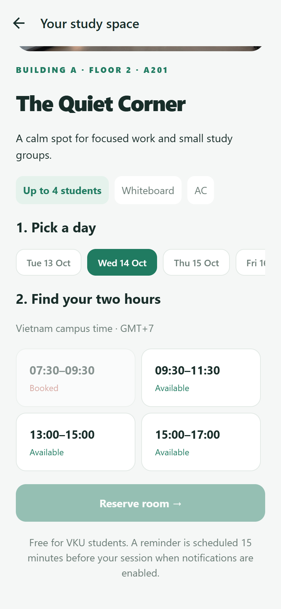
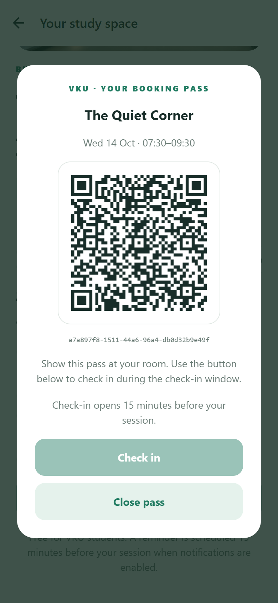
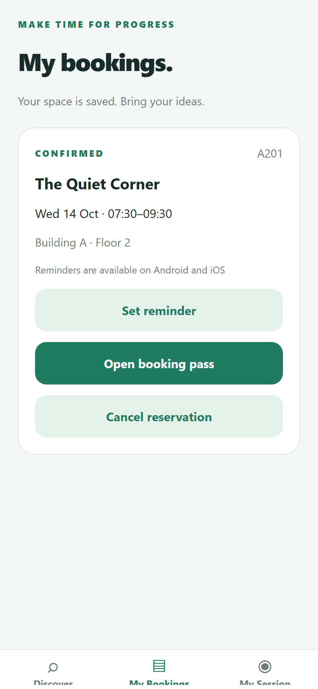

Team Members:
1. Nguyen Ngoc Bao Trung — Student ID: 23IT.B236
Role: Sole student / frontend, state management, booking logic and documentation
Contribution: 100% (sole submission)
Live Demo URL: Not provided; omitted at the student's request.
GitHub Repository: https://github.com/bbaotrungg/Mini-Project-2
Video Demo (Optional): Not supplied.
| # | Required Feature | Status | Implementation Details & Acceptance Level |
|---|---|---|---|
| 1 | Room discovery & status | Complete | 8 sample rooms; bundled photos, building/floor, capacity and time-based Available Now / Occupied badges. |
| 2 | Multi-parameter filters | Complete | Instant search; A/B/C/V buildings; minimum capacity 2–20; all selected equipment must match. |
| 3 | Efficient room feed | Implemented | FlatList, memoized cards, fixed row measurements and bounded batches. Native 60fps is not measured. |
| 4 | Time slots & conflicts | Complete | 7 days, 4 two-hour slots; booked/past slots disabled. Shared server rejects simultaneous duplicates. |
| 5 | Booking pass & check-in | Complete | UUID pass, interactive QR modal and self check-in from start minus 15 minutes until the session ends. |
| 6 | Zustand & persistence | Complete | useBookingStore owns session, reservations, filters and cancellation; AsyncStorage restores saved state. |
| 7 | Local reminders | Implemented | expo-notifications schedules at start minus 15 minutes; permissions, cancellation and tap routing. Phone delivery remains unverified. |
| 8 | Shared real-time updates | Complete | Socket.IO snapshots synchronize connected clients; server persists JSON and revalidates all booking actions. |
The app uses Expo SDK 57, React Native, TypeScript, Zustand and AsyncStorage. Expo Router provides stack and tab navigation on top of React Navigation. A small optional Node.js server provides shared availability; the default local demo requires no server.
Mini-Project-2/ ├── README.md / package.json Setup and root commands ├── study-room/ │ ├── src/app/ Screens and route layouts │ ├── src/components/ RoomCard and BookingPass │ ├── src/store/ useBookingStore │ ├── src/services/ Real-time client and reminders │ ├── src/core.ts Shared booking/time/filter rules │ ├── src/data/ Sample rooms and bundled photos │ ├── server/ Socket.IO server and JSON storage │ └── tests/ Rules, server and browser tests └── submission/ Report, screenshots and evidence




Capture assertions: student session entry, loaded room photo, successful reservation, visible QR pass, disabled booked slot and persistence after reload. No browser runtime page errors were recorded. Native notification delivery and native frame-rate measurements are not evidenced by these captures.
Disabling a slot in the interface alone cannot prevent two students from submitting the same booking before either sees the other's update. Persisted client data can also become stale during a disconnection.
Resolution: one server process owns the authoritative reservations. It validates the slot, writes the next snapshot to disk and broadcasts the result synchronously, without an await between conflict checking and insertion. The client blocks booking while disconnected or awaiting a fresh snapshot. It still revalidates locally to provide immediate feedback.
Evidence: an automated two-client race accepts exactly one reservation and rejects the other. Additional assertions verify cancellation releases the slot, another student cannot cancel it, restored server data still blocks a duplicate, and failed disk writes never acknowledge a booking.
In the installed SDK 57 package, importing the top-level expo-notifications entry point eagerly loads remote push-token registration. That code throws in Android Expo Go, even though this app needs only local reminders.
Resolution: a dedicated localNotifications adapter imports only local scheduling, permission, channel, response and handler modules. Reminder functionality stays enabled. The adapter centralizes SDK-specific paths so future upgrades can be checked in one place.
Evidence: regression tests inspect the installed Android dependency graph and prohibit direct package-entry imports in app code. An exported Android source map includes local scheduling and channel modules and contains none of the crashing remote push modules. After this change, the student reported the project working in Expo Go.
| Check | Observed result / acceptance boundary |
|---|---|
| TypeScript and ESLint | Both pass with the current project source. |
| Automated tests | 10 tests pass: time/filter rules, notification import regression and shared server integration. |
| Browser acceptance flow | Session, combined filtering, booking, QR pass, persistence and cancellation pass. |
| Expo / bundle checks | Earlier Expo Doctor run: 21/21 checks passed. Android, iOS and web exports completed; Android notification graph rechecked after the fix. |
| Physical-device evidence | Student confirmed Expo Go works. Annotated device captures and actual reminder delivery are still pending. |
| Scrolling performance | List optimizations implemented; native 60fps is a target, not a measured result. |
Clone the repository, run npm install then npm start from its root. On Windows PowerShell, use npm.cmd. For shared availability, follow the README's server and environment setup. Validation logs are included in submission/evidence.
Expo local notification support: docs.expo.dev/versions/v57.0.0/sdk/notifications/
Zustand persistence: zustand.docs.pmnd.rs/reference/integrations/persisting-store-data